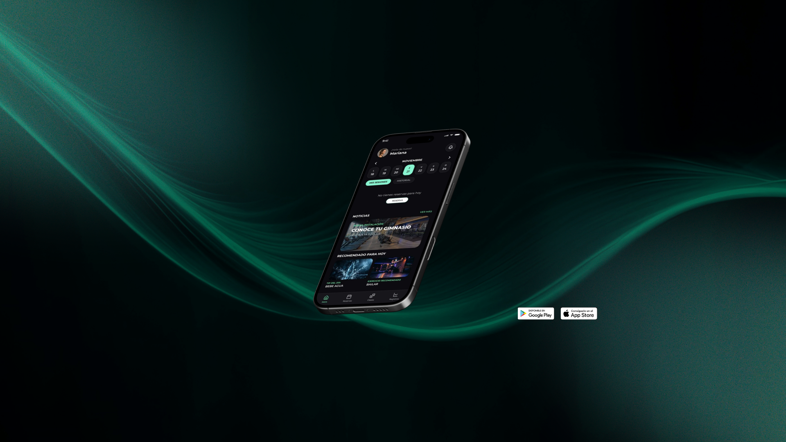

Research
- Keywords y conceptualización
- Benchmark de apps de gimnasios
- Análisis de tendencias móvil
UX/UI Design · Prueba Técnica · 72 horas
Rediseñando cómo los usuarios reservan sus clases: horarios claros, inscripción inmediata y alertas a tiempo.

01El reto
El brief planteaba un supuesto claro: diseñar una app móvil para un gimnasio con cuatro funcionalidades clave. Tiempo máximo: 72 horas. El entregable debía incluir el proceso de ideación completo y un prototipo navegable de alta fidelidad.
“Los usuarios de un gimnasio necesitan una aplicación con la que poder visualizar horarios, poder inscribirse, ver las vacantes disponibles y que les salten alertas de aviso antes de la clase, entre otras posibilidades.”
Brief de la prueba técnica
02Investigación
Aunque el brief definía las necesidades a cubrir, quería tomar decisiones de diseño basadas en contexto real. Empecé mapeando las palabras clave del proyecto y analizando la competencia.
03Empatía
Definí una User Persona para empatizar con el usuario real de la app. Mariana representa el perfil más común: alguien activo con agenda apretada que necesita organizar sus clases sin fricción.
“Me encanta aprovechar al máximo mi día. Necesito organizarme con mis clases del gimnasio para cumplir con el estilo de vida que deseo.”
Mariana Nava
04Análisis
Antes de diseñar la solución, mapeé el Customer Journey actual de Mariana —sin la app— para visualizar cómo se siente en cada etapa del proceso de reserva de una clase.
01Busca horarios
Frustrada
Acciones
Revisa los horarios disponibles en la pizarra del gimnasio.
Puntos de contacto
Pizarra
Frustraciones
Horarios desactualizados, sin información clara.
Oportunidades
Horarios en tiempo real en la app
02Verificar vacantes
Estresada
Acciones
Revisa en la pizarra si hay vacantes disponibles para la clase.
Puntos de contacto
Pizarra
Frustraciones
No sabe si habrá disponibilidad o si tendrá que cambiar de clase.
Oportunidades
Vacantes visibles en tiempo real
03Inscripción
Confundida
Acciones
Se presenta en recepción para inscribirse en la clase que desea.
Puntos de contacto
Recepción / personal
Frustraciones
No saber si quedó inscrita para su próxima clase.
Oportunidades
Inscripción digital con confirmación inmediata
04Recordatorio
Inseguridad
Acciones
Toma nota de la clase en la que se inscribió en un papel.
Puntos de contacto
Post-it / papel
Frustraciones
Olvidarse de la clase.
Oportunidades
Alertas push antes de la clase
05Asistencia
Frustrada
Acciones
Llega al gimnasio para la clase y ve que hubo un cambio y no se enteró.
Puntos de contacto
Gimnasio
Frustraciones
No tener información actualizada.
Oportunidades
Notificaciones de cambios en tiempo real
06Cambio de rutina
Decepcionada
Acciones
Decide realizar otra actividad que esté disponible aunque no le guste.
Puntos de contacto
Gimnasio
Frustraciones
Tener que tomar clases que no son de su agrado.
Oportunidades
Proceso de inscripción más flexible y visible
Desliza para ver todas las fases
05Ideación
Elegí la técnica Crazy 8's por su versatilidad para explorar soluciones rápidas bajo presión de tiempo. Aplicada a cada uno de los 4 problemas principales del journey, me permitió identificar la organización visual óptima antes de wireframear.
Exploré calendarios, listas filtradas, cards horizontales y vistas por turno. La solución ganadora: lista con filtro Mañana/Tarde/Noche + vacantes en badge.
Probé botón directo, modal de confirmación y flujo multi-paso. Seleccioné modal simple con datos de la clase y confirmación animada.
Exploré notificaciones push del sistema, alertas in-app y recordatorio desde “Mis reservas”. Implementé los tres niveles para máxima cobertura.
Evalué dashboard complejo vs resumen limpio. Elegí home con próxima reserva destacada, acceso rápido a favoritos y noticias del gym.
06Design System
Todas las decisiones visuales se justificaron con criterios de accesibilidad WCAG AA: contrastes mínimos, áreas de toque ≥44px y escalado tipográfico legible en condición de uso físico.
#0D0D0DBackground principal · contraste máximo
#3DDC84Acción primaria · CTA · confirmaciones
#FFFFFFTipografía principal · títulos
#1A1A1ACards · superficies · bottom nav
rgba(255,255,255,0.5)Textos secundarios · metadatos
07Resultado
El prototipo final es navegable e interactivo con micro-interacciones reales: estados activo/inactivo en botones, notificaciones push del sistema y transiciones fluidas entre pantallas.
Flujo 01
Splash de marca + home con resumen diario. El usuario entiende de un vistazo qué tiene pendiente: próxima reserva destacada, acceso a favoritos y noticias del gym. Sin navegación extra.
Flujo 02
Lista de clases filtrable por turno (Mañana / Tarde / Noche) con contador de vacantes visible directamente. Elimina la pizarra desactualizada y la incertidumbre antes de desplazarse al gym.
Flujo 03
Modal de confirmación previo, pantalla de éxito animada con datos completos de la reserva y opción de añadir al calendario. La pantalla de cancelación mantiene el mismo patrón visual para coherencia.
Flujo 04
Notificaciones push del sistema antes de cada clase y sección “Mis reservas” con vista completa y gestión. Mariana ya no necesita recordarlo — la app lo hace por ella.
08Resultados
En 72 horas se completó un proceso de diseño completo y una solución navegable que resolvía los 6 puntos de dolor identificados en el Customer Journey.
Si este proyecto te da una idea de cómo trabajo, me encantaría contarte más.
Contactar